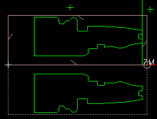

View the cross section of the part geometry
Change to a static wireframe view and make layer 11 invisible.

-
In the background of the graphics window, right-click and choose Rendering Style→Static Wireframe
 .
.
-
Choose Format→Layer Settings.
-
In the Layer Settings dialog box, in the Name column, clear the 11
 check box.
check box.
-
Click Close.